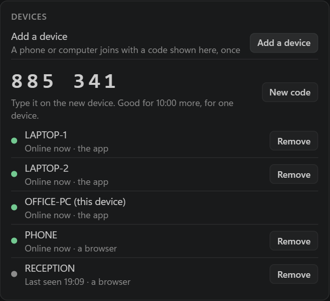
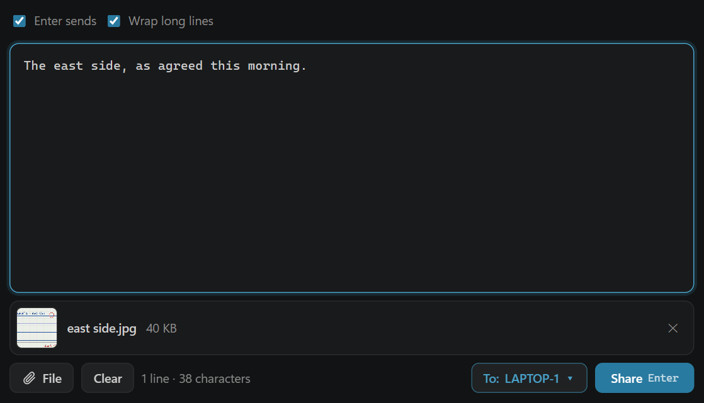
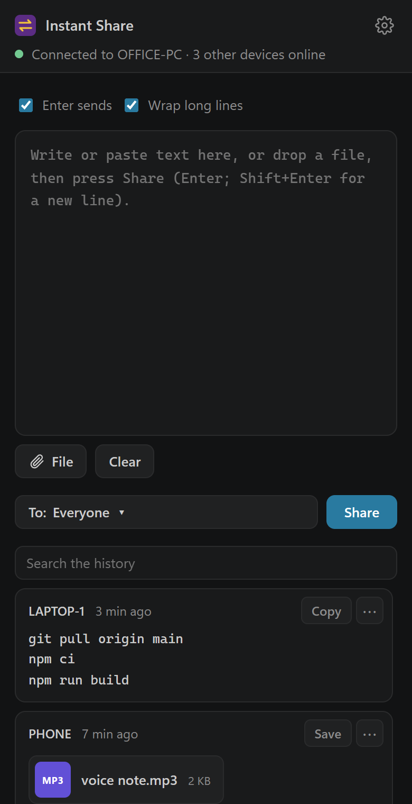

Pass text, photos, documents and voice notes between the computers and Android phones on your own network. Share on one, and the others have it at once, with a notification and a Copy button. Choose who sees it; pin, archive, edit. Encrypted, and only for the devices that joined with a code. No accounts; no internet needed.
Version 1.2.0 · Windows 10 and 11 (64-bit) · Android 10 and newer · Published by SCAFFApps
Contents
1 What Instant Share is
2 Installing and setting up
3 The window at a glance
4 Sharing text and files
5 Who should see it
6 The history
7 Settings
8 Notifications on Windows
9 The Android app, and browsers
10 The tray icon and keeping it running
11 Shortcuts, options and files
12 Privacy and security
13 Troubleshooting
1. What Instant Share is
Instant Share passes things between the devices on your own network: commands, addresses, links, notes, code, a photo of a drawing, a quotation, a voice note. Anything you would otherwise e-mail to yourself, carry on a USB stick or type again.
One computer keeps the history. The other computers run the same app and connect to it, and Android phones run Instant Share for Android; they find it on the network by themselves. Anything else (an iPhone, a computer without the app) uses a browser.
LaptopInstant Share app
Android phoneInstant Share for Android
iPhone, tabletany browser
→
The computer that keeps the historyInstant Share app · answers only your own network, encrypted, and only devices that joined · no internet needed
Share: write, paste or drop a file and press Enter. The other devices have it within a moment.
Be told: a Windows notification on computers, an Android notification on phones, each with a Copy button.
Choose who sees it: everyone, or only the devices you tick.
Keep it tidy: pin what you need often, archive (swipe left) what you are done with, edit or delete what you shared.
Only the devices you let inEverything between the devices is encrypted, and only devices that joined with a pairing code can see or share anything (section 2). Someone else on the same Wi-Fi gets nothing. It is still meant for your own devices, at home or in your own office (section 12).
2. Installing and setting up
File
What it is
Instant-Share-1.2.0-portable.exe
The app for Windows 10 and 11 (64-bit), in one file. Nothing is installed and no administrator permission is needed: copy it anywhere and double-click it. Use the same file on every computer.
Instant-Share-1.2.0.apk
Instant Share for Android 10 and newer (section 9). Phones on the same Wi-Fi can also get it from the computer that keeps the history.
instantshare.py
Instant Share as a plain server, for Mac and Linux: python3 instantshare.py; every device then uses a browser.
"Windows protected your PC"The app is not code-signed, so Windows may show this message the first time. Choose More info, then Run anyway.
Coming from 1.1 (or Text Share 1.0)?Update every device to 1.2: a 1.2 computer no longer talks to older versions. Quit the old one from its tray menu, then start the new file: it keeps the history, settings and "start with Windows". The computer that keeps the history is joined already; each other computer and phone joins it once with a code (below), and keeps its own items. On the phone, install the new app over the old one.
The first start: one question
The first start on a laptop. Instant Share has already found OFFICE-PC, the computer that keeps the history.
On one computer, one that stays on while you work, choose Use this computer. Windows asks whether to allow Instant Share on networks: allow it on Private networks.
On every other computer, choose that computer in the list, or type its name or address and press Connect.
Leave Start Instant Share when I sign in to Windows ticked, so it is always ready to show what others share.
To change it later: Settings (the gear) > Change setup, or the tray icon's menu.
Joining with a code, once
A laptop joining OFFICE-PC: the code shown there, typed here.

On a device that has joined: Settings > Devices > Add a device.
Only devices that have joined can see the history or share. The computer that keeps it is joined from the start. Every other computer, phone or browser joins once:
On a device that has joined already (the computer that keeps the history, for example), open Settings > Devices > Add a device, or Add a device… in the tray menu. A 6-digit code appears, good for 10 minutes and for one device.
On the new device, type the code where it asks for it, and press Join.
The code itself never travels over the network: both devices check it without sending it, so someone listening learns nothing from it. Five wrong tries and the code stops working; make a new one. Settings > Devices also lists every device that has joined, with Remove to take one off (a lost phone, a computer sold): it can see nothing more until it joins again with a new code.
3. The window at a glance
The dark appearance (the default): the editor on the left, the history on the right, with a pinned item on top.
Part
What it does
Dot and status
Green: connected to the computer that keeps the history, with the number of other devices online. Red: it cannot be reached (section 13).
This device
The name shown next to everything this device shares. Click it to change it (in Settings).
Pin
Keeps the window on top of the other programs; click again to stop (Windows app).
Sun or moon
Switches between the dark and the light appearance.
Gear
Settings (section 7).
Enter sends, Wrap long lines
Enter shares at once (Shift+Enter starts a new line); long lines fold to fit.
File, Clear
Add a file; empty the editor.
To, Share
Who should see it (section 5), and Share.
History
Everything shared with this device: pinned items first, then the newest, with a search box.
The same window in the light appearance.
4. Sharing text and files
Text
Write or paste in the editor.
Press Enter, or the blue Share button. (Shift+Enter starts a new line. With Enter sends off, it is Ctrl+Enter.)
The editor empties, and the text is at the top of the history on every device that may see it.
A file

A photo added, with a line about it, ready to share with LAPTOP-1 only.
Add one file to a share: press File, drag it from File Explorer onto the editor, or paste a picture with Ctrl+V. Text in the editor goes with it, as a caption; ✕ takes the file off again.
What can be shared
In the history
Photos: PNG, JPEG, GIF, WebP, BMP, HEIC
Shown as pictures (HEIC as a file)
PDF
Opens in the PDF viewer
Word, Excel, PowerPoint (also .doc, .xls, .ppt and OpenDocument), RTF, text, CSV
Each file can be up to 5 MB; text up to 20 MB. Instant Share checks what a file really is from its contents, not its name: programs, scripts and web pages are refused, even renamed.
Photos and videos from a phone are often bigger than 5 MBShare a smaller copy: most phones can send or save a photo at a smaller size; a screenshot of it is usually well under 5 MB.
5. Who should see it
The devices Instant Share knows, with who is online now.
The To button next to Share says who will see what you share. Click it to choose:
Everyone: every device, now and later (the default).
Only some devices: tick them. The others will not see it, in the history or as a notification.
A green dot means the device is online: the app is running there (in its window or in the tray), or a browser has the page open. Offline devices can be ticked too; they see it when they come back.
Your choice stays for the next share, and the button shows it, for example To: LAPTOP-1. In the history, such an item shows its devices after an arrow: → LAPTOP-1.
Locked, not only tidyEach device is known by its own key from joining, so a device that was not chosen cannot see the item or open its file, even with its address. Only its sender can edit or delete it (section 12).
6. The history
OFFICE-PC's own message, changed after it was shared ("edited 18:00"), with its ⋯ menu open.
On each item
What it does
Copy
Copies the text, ready to paste. On a photo (in the apps), Copy or Copy photo copies the picture itself.
Save
Saves the file in the folder chosen in Settings (Downloads unless you change it) and shows it there.
⋯ > Pin to the top
Keeps it above everything else, under Pinned, on this device. Unpin undoes it.
⋯ > Archive
Puts it away on this device: it leaves your history (the others still have it). Undo appears for a few seconds.
⋯ > Edit
Only on what this device shared. The text comes back into the editor, under "Editing your message"; change it and press Save. Everyone sees the new text in place, marked edited with the time. Cancel leaves it as it was.
⋯ > Delete for everyone
Only on what this device shared: it disappears from every device's history (after a question).
Swipe left on a phone or touch screen to archive an item quickly.
The archive: Settings > Archived messages > Show. Swipe left there (or ⋯ > Back to the history) to bring one back; Back to the history at the top returns.
Search the history finds items by their text, their file name, or the device that shared them.
Photos open full size with a click; Show all opens a long item; new items glow briefly; Arabic and other right-to-left text reads right to left, line by line.
The history shows the newest 300 items (and every pinned one); search reaches all of them.
7. Settings
Settings on the computer that keeps the history.
The gear at the top right opens Settings:
Part
What it holds
This device
Its name, shown to the others.
Appearance
Dark or Light.
Writing
Enter sends; Wrap long lines.
This computer (Windows)
Keep the window on top of the other programs. Copy what arrives: text and photos others share go straight to the clipboard, ready to paste, without a click.
Saving files
Where Save puts files: Change… to choose a folder; Use Downloads to go back. (Apps only; browsers save their own way.)
History
Which computer keeps it, and Change setup; the archived messages; the address for phones and browsers.
Devices
Add a device (a pairing code, section 2), and every device that has joined, with Remove.
Storage
How much of the history's 2 GB is used, and by what (below). On the computer that keeps it: Show the history folder.
About
The version, Get the app, Updates (section 10), and in the apps Quit Instant Share, which closes it completely.
Storage
The share of 2 GB used, then what the history holds, by kind.
The history can hold 2 GB in all. The bar shows what is in it: messages, photos, documents, audio, videos and archives, with the number of items and their size. When it is full, new shares are refused with a message: delete old files (⋯ > Delete, on what you shared) to make room.
8. Notifications on Windows
When another device shares something with this computer, Windows shows a notification, with a sound, even when the Instant Share window is closed: who shared it, the text or the file's name, and the photo itself for a photo. It stays in Windows' Notification Centre (click the date and time by the clock) until you clear it.
On the notification
What it does
Copy
Text: copies all of it. Photo: copies the picture. With Copy what arrives on (Settings), it is on the clipboard already.
Save
For any other file: saves it in the folder chosen in Settings; a second notification says where, with Show in folder.
Open, or a click on it
Opens the Instant Share window.
No notification appears while the Instant Share window is in front: the history shows new items itself.
They follow Windows' own settings: Do not disturb keeps them out of sight (they still go to the Notification Centre), and Settings > System > Notifications > Instant Share chooses banners, sounds, or none.
Their buttons work while Instant Share runs (in the tray is enough). When it quits, its notifications are cleared from the Notification Centre.
9. The Android app, and browsers

The history on a phone; the gear opens Settings.Settings on a phone, with where files are saved.
Installing it
Copy Instant-Share-1.2.0.apk to the phone, or download it there from the Releases page. (A phone browser can also get it from the computer that keeps the history: see iPhones and other browsers below for opening the page.)
Open the downloaded file and allow installing from that source when Android asks; then Install. It installs over an older Instant Share, keeping its setup.
Open it and tap the computer that keeps the history, then type the pairing code shown on a device that has joined (section 2). Allow notifications, and allow it to run in the background (Android asks both, once).
The phone, after choosing OFFICE-PC: the code from Settings > Devices there.
Using it
Everything works as on a computer: write, add a file, choose who sees it, share; Copy, Save, pin, archive (swipe left), edit and delete your own.
From any other app: tap Share there on a link, a text, a photo, a document or a voice note, and choose Instant Share. It lands in the editor, ready to share.
Notifications with Copy (text, photo), Save and Open (files) come with the app closed too. A small "Connected to OFFICE-PC" notice stays while it listens; tap it to hide it for good.
Documents open in the phone's own apps (a PDF reader, Word, Excel...). Save files to in Settings chooses the folder, with Android's own folder picker.
Back first closes what is open (Settings, a menu, a photo, the archive), then puts Instant Share away. It never returns to the setup.
iPhones and other browsers
They open the address shown in Settings > Phones and browsers, for example https://OFFICE-PC:8765. The first time, the browser warns that the connection's certificate is not from an authority it knows: Instant Share makes its own, on the computer that keeps the history (there is no web address to certify). Continue to the page (on an iPhone: Show Details > visit this website), then type a pairing code (section 2) and a name for the device. Everything works except notifications (the page shows new items while it is open); Save downloads the browser's usual way.
Browsers cannot check the computer's keyThe apps check, every time, that they talk to the very computer they joined. A browser cannot: it only shows its warning, every time it meets a certificate it does not know. Open the page only on your own network, by the address you were given, and prefer the apps where there is one.
10. The tray icon and keeping it running
Once set up, Instant Share keeps running in the tray, by the clock, when you close its window: the computer that keeps the history goes on serving the others, and every computer goes on showing notifications.
Tray icon
What it does
Click
Opens the window.
Right-click
Open Instant Share, Add a device… (a pairing code), Start with Windows (ticked when it does), Change setup… and Quit Instant Share, which really stops it (also in Settings > About).
Double-clicking the program while it is running opens the running one. Keep the window on top (the pin, or Settings) keeps the window above other programs until you turn it off; it is remembered.
Keep the computer that keeps the history awake
A computer that is asleep cannot share. On it, open Settings > System > Power & battery > Screen, sleep and hibernate and set sleep to Never when plugged in.
A new version
New versions are published on the Releases page of Instant Share on GitHub. Settings > About > Updates says which version this is and whether a newer one is out:
Check now asks GitHub at once. With Check for updates once a day on (the default), the apps ask by themselves once a day and say so in a notification when a new version is out. Only that question goes to the internet; nothing you share does.
Update now on Windows downloads the new program next to this one, checks it against the checksum published with it, then restarts in it: the history, settings and "start with Windows" stay, and the old file is removed.
On Android, Update now downloads the new app, checks it, and opens Android's installer (allow Instant Share to install apps the first time). It installs over this one, keeping its setup.
Update the computer that keeps the history together with the others: devices on different versions may not understand each other.
By hand: quit Instant Share from the tray menu and start the new file instead. On the computer that keeps the history, Windows may ask again to allow it on networks: allow it on Private networks.
Backing up or moving the history
The whole history, files included, is one file, history.db, in %LOCALAPPDATA%\InstantShare on the computer that keeps it (Settings > Show the history folder). To back it up or move it, quit Instant Share first, then copy the file.
11. Shortcuts, options and files
Keyboard shortcuts
Keys
What they do
Enter
Share (with Enter sends on); Shift+Enter starts a new line.
Ctrl+Enter or Ctrl+S
Share, always.
Ctrl+V in the editor
Pastes text, or adds a copied picture as the file.
Esc
Closes what is open: a question, a menu, a photo, the device list, Settings, the archive.
Options
For special cases, add these after the program's name in a command window (open the program's folder, type cmd in its address bar and press Enter):
Option
What it does
--port 9000
On the computer that keeps the history: another port than 8765. (If 8765 is taken, it picks the next free one by itself.)
--data D:\InstantShare
Keeps the history and settings in another folder, for example next to the program on a USB stick.
--hidden
Starts in the tray, without the window. Windows starts it this way at sign-in.
Where things are saved
What
Where
The history, files included
%LOCALAPPDATA%\InstantShare\history.db on the computer that keeps it.
Settings
%LOCALAPPDATA%\InstantShare\settings.json on each computer.
A log, for troubleshooting
%LOCALAPPDATA%\InstantShare\textshare.log on each computer.
This computer's encryption key and certificate
tls-key.pem and tls-cert.pem in the same folder, on the computer that keeps the history. Keep them with history.db when moving it: with a new key, every device must join again.
Joined devices' keys
Each device keeps its own (in its settings); the computer that keeps the history keeps only a fingerprint of each.
Saved files
The folder chosen in Settings; Downloads unless you change it.
Pins and archive
Kept with the history, for each device.
12. Privacy and security
What keeps strangers out
Only devices that joined. A device joins once with a 6-digit pairing code from a device that has joined (section 2), and gets its own secret key. Without one, nothing: not the history, not the list of devices, not a file, not a share. Remove (Settings > Devices) takes a device off at once.
The code never travels. Both sides check it without sending it (a method called SPAKE2), so listening to the network reveals nothing about it. Someone pretending to be your computer gets one guess at it, not a million; the code allows five tries and lasts ten minutes.
Encrypted. Everything between the devices goes over https (TLS 1.2 or newer), with a key the computer that keeps the history makes for itself.
The apps check whom they talk to. When an app joins, it remembers the computer's key, and from then on it refuses any other, so a device pretending to be that computer is refused too, with a message.
Locks that hold. Each request carries the device's own key, so "who should see it", "only the sender edits and deletes", pins and the archive are enforced by the computer that keeps the history, not only by the page.
Stays on your network. It answers only devices on its own local network, and nothing you share leaves it. The only thing that reaches the internet is the apps' question to GitHub about a new version (which can be turned off).
Can't be read by websites, and checks files. A website open in a browser cannot reach the history; files are checked by their contents, and documents only ever download.
What it does not do
A browser cannot check the computer's key (section 9): it warns about the certificate every time, so a fake page would look the same. Use the apps where you can.
The history file is not encrypted on the disk of the computer that keeps it: anyone who can sign in to that Windows account can copy it. Protect that computer with a password, and BitLocker if you can.
Devices that joined are trusted. Any of them can add a device or remove one. Remove a device you no longer use.
No expiry. Items stay until their sender deletes them.
Passwords and keysInstant Share keeps them safe from others on your network, but they stay in the history on the computer that keeps it. Delete such an item once you have pasted it where it belongs.
13. Troubleshooting
Problem
What to do
Setup finds no computer, or cannot connect
Check that Instant Share runs on the computer that keeps the history, and that both are on the same network.
On that computer, set the network to Private: Settings > Network & internet > Wi-Fi or Ethernet > Network profile type.
Type its numbered address instead of its name. A VPN, or a guest Wi-Fi, can hide devices from each other.
If Windows never asked to allow it, allow it yourself in an administrator command window on that computer:
This device has not joined yet, or was removed: on a device that has joined, Settings > Devices > Add a device, and type the code it shows. "Not right": check the digits, or make a new code (each lasts ten minutes and five tries).
"This is not the … this computer joined"
The computer at that address shows another key than when this device joined. If Instant Share was set up again there (a new key: a reinstalled Windows, a replaced folder), choose Setup and join it again. If not, someone may be pretending to be it: do not join.
"… runs Instant Share 1.1"
Update that computer to 1.2 too: 1.2 talks only to 1.2.
The browser warns about the connection
Expected the first time: see section 9, iPhones and other browsers.
The dot is red: "Can't reach…"
The computer that keeps the history is off or asleep, or Instant Share was quit there. Start it again; the window reconnects by itself, and what you typed stays.
No notifications on Windows
Instant Share must be running on this computer, in its window or in the tray (click the ^ by the clock). Check that Do not disturb is off (Settings > System > Notifications; Windows can turn it on by itself during presentations, games and when duplicating a display), and that Instant Share is allowed in the list below it. Missed ones are in the Notification Centre.
"Could not ask GitHub"
Checking for updates needs the internet; sharing does not. Try later, or update by hand (section 10).
No notifications on the phone
Allow notifications for Instant Share (the phone's Settings > Apps > Instant Share > Notifications) and set its battery use to Unrestricted. The phone must be on the same Wi-Fi.
"The history … is full (2 GB)"
Delete old files you shared (⋯ > Delete for everyone). Settings > Storage shows what takes the room.
"That kind of file can't be shared"
Only the kinds in section 4 can be shared. A program or script inside a ZIP is fine; on its own it is refused.
"Only the device that shared it can …"
Edit and Delete belong to the sender. To put someone else's item away on your device, archive it.
The program does not start, or disappears
Choose More info then Run anyway on the SmartScreen message. If your antivirus moved the file, restore it and mark it as allowed.
Something else
The log, %LOCALAPPDATA%\InstantShare\textshare.log, says what Instant Share did. Send it along when asking for help.
The top of the window when the computer that keeps the history cannot be reached.